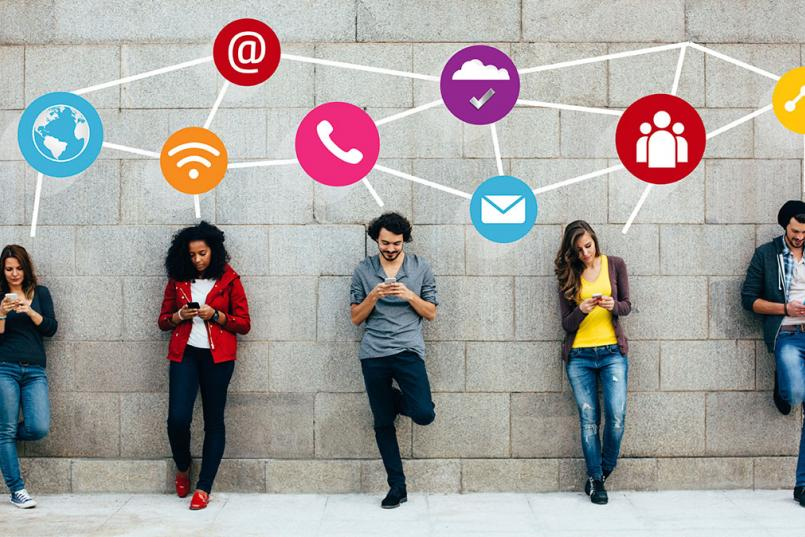
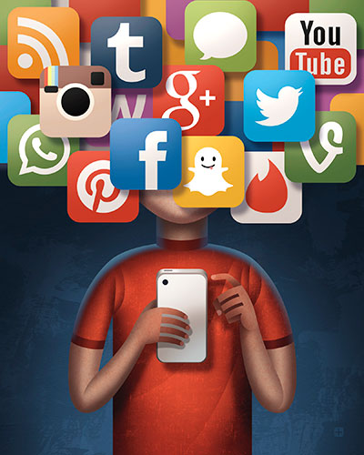

5 Ways Social Media Affects Teen Mental Health
By Sherri Gordon
Updated October 20, 2019
Medically reviewed by Steven Gans, MD on August 29, 2018

It should come as no surprise that the pressure to be available 24/7 on social media is a very real challenge for today's teenagers. Aside from the fact that their grasp of and dependence on social media far exceeds that of many adults, they also are using social media at much greater rates too. In fact, a report by Common Sense Media found that 75 percent of American teenagers have social media profiles. Social media is a daily part of life for the vast majority of teens.
How Does the Teen Brain Respond to Social Media?
For many teens, social media can become almost addictive. In a study by researchers at the UCLA brain mapping center, they found that certain regions of teen brains became activated by "likes" on social media, sometimes causing them to want to use social media more.
During the study, researchers used an fMRI scanner to image the brains of 32 teenagers as they used a fictitious social media app resembling Instagram. The teenagers were shown more than 140 images where "likes" were believed to be from their peers. However, the likes were actually assigned by the research team.
As a result, the brain scans revealed that in addition to a number of regions, the nucleus accumbens, part of the brain's reward circuitry, was especially active when they saw a large number of likes on their own photos. According to researchers, this area of the brain is the same region that responds when we see pictures of people we love or when we win money. What's more, researchers say that this reward region of the brain is particularly sensitive during the teen years, which could explain why teens are so drawn to social media.
In another part of the study, researchers could see a correlation between social media and peer influence. Participants in the study were shown both neutral photos and risky photos. What they found is that the type of image had no impact on the number of likes given by teens in the study. Instead, they were likely to hit "like" on the popular photos regardless of what they showed. Researchers believe this behavior shows that peers can have both a positive and negative influence on others while using social media.
What Impact Does Social Media Have on Mental Health?
Undoubtedly, social networking plays a vital role in broadening teen social connections and helping them learn valuable technical skills. But what impact is all of this social networking having on young teen minds? Most reports indicate that the impact can be significant.
Not only are teens' developing brains vulnerable to so much time online, but because they often have difficulty self-regulating their screen time, their risks can increase. Additionally, they are more susceptible to peer pressure, cyberbullying and sexting—all activities involving digital communication—making navigating the online social world treacherous at times.
All in all, there are a number of health issues that develop as a result of too much time online. Here is an overview of the most common mental health-related issues teens can experience from too much social media use.
Depression
Researchers are just beginning to establish a link between depression and social media. While they have not actually discovered a cause and effect relationship between social media and depression, they have discovered that social media use can be associated with an intensification of the symptoms of depression, including a decrease in social activity and an increase in loneliness.
For instance, a study published in Computers in Human Behavior found that the use of multiple social media sites is more strongly associated with depression than the amount of time spent online. According to the study, people who used more than seven social media platforms had more than three times the risk of depression than people who used two or fewer sites.
What's more, several additional studies have shown that the prolonged use of social media may be related to the signs and symptoms of depression as well as low self-esteem, especially in children.

link to the original article!